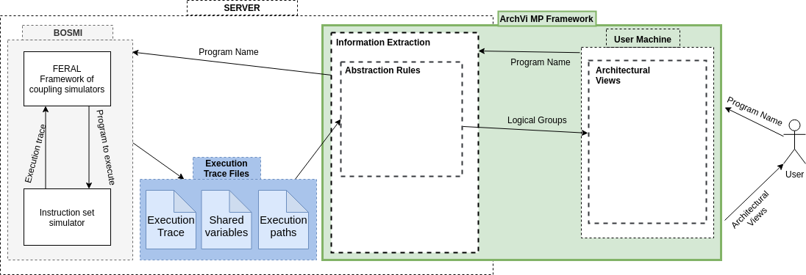

ArchViMP
Architectural Views for Multithreaded Programs
a Framework for Automatic Extraction of Concurrency-related Architectural Properties from Software
Keywords: Concurrent programming·Multithreading programming·Architectural abstraction·Architectural views
© Supported by the research institutes Fraunhofer IESE and DFKI-IFS
Outlines
ArchViMP Overview Structure
Figure 1 show the overview structure of ArchViMP framework where the interaction of the framework with external systems is depicted.

Figure 1: The overview structure of ArchViMP framework
ArchViMP Inputs
We receive three text files as the input for our framework. In below we clarify the format of each.
1 - The list of the shared variables
This is provided by the previous work (See Figure 2), which is based on using the Eraser Lockset algorithmIn below there is the list of shared variables of ROSACE benchmark as an example.
variable name,Address of memory,Data type;
395293680,{395293680},INT;CONSTANT;
step_simu,{394729264},INT;CONSTANT;
tasks,{394729520},POINTER;POINTER;
max_step_simu,{394729552},INT;CONSTANT;
h_c,{393974944},DOUBLE;CONSTANT;
Vz_control_50483_delta_e_c_delta_e_c,{394798512},DOUBLE;CONSTANT;


Figure 2: a) Eraser Lockset memory state model; b) Data structures necessary for Lockset
2- Execution trace data
This file is a detailed list of the executed instructions. In the box below a small part of the file is displayed.In below you see the execution trace data of ROSACE benchmark as an example.
Timestamp,ThreadID,Operation,ParameterName (function or a variable name),Address of memory,Additional info (data typeof variable),Value,filename,source code line number
11.19.58.1958,6245422,FUNCTIONCALL,main,0,,,,0
11:19:58:429,6245422,STORE,,46648696,INT;LOCAL;,0,,0
11:19:58:429,6245422,STORE,tsimu,46649000,INT;LOCAL;,20,rosace.c,10
11:19:58:429,6245422,LOAD,tsimu,46649000,INT;LOCAL;,20,rosace.c,14
11:19:58:429,6245422,LOAD,,0,INT;,20,rosace.c,14
11:19:58:429,6245422,FUNCTIONCALL,run_rosace,0,INT;CONSTANT;,,rosace.c,14
...
11:19:58:636,20176314,STORE,,46648968,INT;LOCAL;,1,assemblage.c,145
11:19:58:636,20176314,GETELEMENTPTR,,46648972,POINTER;LOCAL;,0x2c7ce8c,assemblage.c,145
11:19:58:636,20176314,STORE,,46648972,INT;LOCAL;,0,assemblage.c,145
11:19:58:636,20176314,GETELEMENTPTR,,46648968,POINTER;LOCAL;,0x2c7ce88,assemblage.c,145
11:19:58:636,20176314,STORE,,395332088,POINTER;LOCAL;,0x2c7ce88,assemblage.c,145
11:19:58:636,20176314,GETELEMENTPTR,struct.write_proto_t,395332092,POINTER;LOCAL;,0x179049fc,assemblage.c,145
11:19:58:640,20176314,STORE,,395332092,INT;LOCAL;,2,assemblage.c,145
...
3- Execution path logs (coverage)
This input includes several blocks of information (see Figure 3).- The outer block specified with the “Variable” keyword. Each variable blockcontains information about the operations and accesses that have been doneon a variable.
- The first inner block with the keyword “Thread” defines the threads thataccessed that variable via a entry point function.
- The next inner block with the keyword “Function” determines within whichnested function that variable is accessed.
- The access of a shared variable within a logical decision is specified in the innerblock identified with “logicalDecision” keyword. This information follows thesame format of records in the trace input.

Figure 3: Format of execution path logs
Evaluation
To evaluate our work, we have publicly available benchmarks of parallel and concurrent programs based on POSIX threads.
In order to test our approach on software with a complexity that resembles that present in industrial software, we focused on two publicly available benchmarks.
- ROSACE (Research Open-Source Avionics and Control Engineering)
- TACLeBench (Timing Analysis on Code-Level) - powerwindow
Results
When applied on these three benchmarks, our approach produced diagrams at all three levels of abstraction. At level 0, it produced the raw visualization of the execution traces, showing the direct interaction between threads and shared variables. Level 1 of the abstraction illustrates the members (either technical or logical) of each set of logical data as well as the operation access types applied to each member by the threads. At abstraction level 2, we show the interconnection of logical components and logical data. In the following, we show the results for each benchmark individually.
ROSACE Benchmark
TACLeBench - powerwindow Benchmark